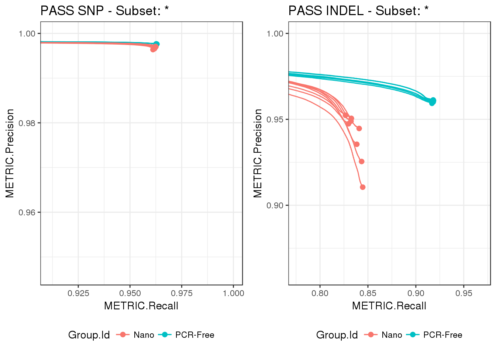
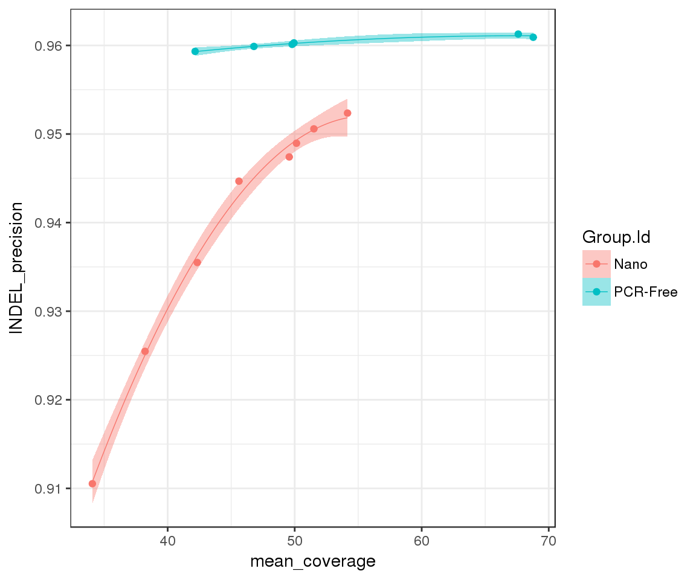

In this vignette we will illustrate how to access hap.py results once we have created a happy_compare object. Also, we will cover how to complement them with custom metrics, just by adding an additional build_metrics column to our samplesheet.
Let’s load our NovaSeq dataset with PCR-Free vs. Nano builds for NA12878, using a samplesheet that includes custom metrics (see vignettes/pcrfree_vs_nano.csv):
# do not run
samplesheet_path <- "vignettes/pcrfree_vs_nano.csv"
happy_compare <- read_samplesheet(samplesheet_path, lazy = TRUE)# given the size of the dataset, load from Rds object instead
happy_compare <- readRDS("pcrfree_vs_nano.Rds")We can have a look at the contents of the resulting happy_compare object to identify which elements are available for querying:
names(happy_compare)
## [1] "samplesheet" "happy_results" "build_metrics" "ids"Since our demo dataset includes results from two different library preparation workflows, we can evaluate if there are any differences in variant calling performance across groups. For that, we will need to access hap.py results. In particular, we are interested in ROC metrics, as ROC curves offer a convenient way of visualising accuracy across multiple classification methods (in our case True Positive vs. False Positive calls in PCR-Free vs. Nano builds).
Let’s extract ROC metrics for PASS SNVs and INDELs in our happy_compare dataset:
roc_snvs <- extract_metrics(happy_compare, table = "pr.snp.pass")
roc_indels <- extract_metrics(happy_compare, table = "pr.indel.pass")Then visualise them with the pre-defined function hc_plot_roc():
p1 <- hc_plot_roc(happy_roc = roc_snvs, type = "SNP", filter = "PASS")
p2 <- hc_plot_roc(happy_roc = roc_indels, type = "INDEL", filter = "PASS")
gridExtra::grid.arrange(p1, p2, ncol = 2)
From the difference in scales between the two plots, we can see that performance is higher for SNPs compared to INDELs, regardless of prep method. In addition, the differences between PCR-Free and Nano are most accentuated in INDELs, with a wider spread in precision across Nano builds.
Often we have additional information about our samples besides the results generated with hap.py, e.g. metadata, BAM/VCF metrics, etc. It is easy to add these custom metrics to our happy_compare object, we just need to provide a build_metrics column to our samplesheet that points to relevant csv files (see e.g. vignettes/pcrfree_vs_nano.csv). Here we will refer to custom metrics as build metrics, since they are typically metrics calculated on the outputs of the analysis pipeline (BAMs, VCFs), i.e. after “building” the alignments.
For example, the build metrics csv for our first sample contains the following:
happy_compare$build_metrics[[1]] %>%
t() %>%
head(n = 15)
## [,1]
## filename "/illumina/build/stripes/happyTestData/pcrfree_vs_nano/build_metrics/NA12878-I30_S1.summary.csv"
## sample_id "NA12878-I30"
## sample_name "NA12878-I30"
## run_folder "/data/scratch/RunFolder"
## reference_genome "Homo"
## paired_end "True"
## metrics_version "1.0.9.1"
## metrics_deliverable "Default"
## callability "95.3"
## contamination "0.54"
## autosome_mean_coverage "49.95"
## autosome_coverage_at_1x "99.55"
## autosome_coverage_at_10x "98.81"
## autosome_coverage_at_15x "98.52"
## autosome_callability "96.32"A more convenient way to access build metrics is to use the extract_metrics() function, as we did for hap.py results. This adds a unique identifier to each sample in our dataset, making it easier to combine data downstream. As an example, let’s explore further the spread in INDEL precision identified in the ROC curves above:
# link build metrics to hap.py results
summary <- extract_metrics(happy_compare, table = "summary")
build_metrics <- extract_metrics(happy_compare, table = "build.metrics")
merged_df <- summary %>%
# focus on PASS INDEL for now
filter(Type == "INDEL", Filter == "PASS") %>%
# focus on precision
select(happy_prefix, METRIC.Precision) %>%
inner_join(build_metrics)
## Joining, by = "happy_prefix"Since we have access to BAM metrics, we can investigate if there is any coverage bias in our dataset:
merged_df %>%
ggplot(aes(x = mean_coverage, y = METRIC.Precision, group = Group.Id)) +
geom_point(aes(color = Group.Id)) +
geom_smooth(method = "lm", aes(color = Group.Id, fill = Group.Id),
formula = y ~ poly(x, 2), lwd = 0.25) +
ylab("INDEL_precision")
As expected, increasing coverage leads to higher INDEL precision. Importantly, precision gains from increased coverage are not equivalent across prep methods: whilst we have reached saturation levels for PCR-Free, we can mitigate the gaps in precision in Nano by sequencing at higher depth.